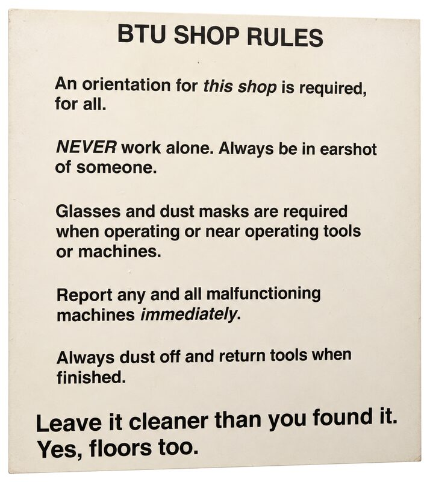

ATLAS | BTU Lab
ATLAS | BTU Lab
BTU Rules & Policies

Rules
Be Cool.
Ways to be cool:
- Respect others, their space, and their work.
- Observe safety for you, others, and equipment.
- PLEASE...report problems with equipment.
- Remember, using slang speech OR pop culture as an excuse for denigrating people identifying with a race, age group, gender, sexual orientation, physical ability, etc., is not for the BTU.
- Report taking the last "____________". ex. Glue stick.
- First ask approval to remove any tool or material from the lab.
- Protect surfaces from hot glue, paint, marmots, etc.
- Let the staff know if anyone is not being cool.
- Clear scraps of material on a common work area.
- Sweep up scraps of material on the floor.
- Keep it clean.
- Use tools, materials and processes as intended, when appropriate (a.k.a get trained!).
- Did we mention, "get trained"? That's why you're here!
- Keep common work areas clear of your stuff, when you can.
- Put things back where they belong, not just where you found them.
- Leave out anything else, not listed here, that negatively affects the BTU, ATLAS, CU, and EARTH community. Please, do not make us make a rule.
Policies
- BTU Lab observes all policies and codes of conduct of Colorado University.
- Access to BTU will be removed for anyone repeatedly disregarding lab rules and policies and/or disrespecting others.
Wood Shop Policies
FOR YOUR SAFETY, major equipment including table saw, band saw, belt sander, chop saw, and drill press are powered off between the hours of 10pm and 6am, daily. Tampering with the timers is considered a serious safety violation.
Violation of any wood shop policy will result in loss of access to BTU Lab and the wood shop until both orientations are repeated.
- Use of the wood shop requires an orientation from BTU Lab staff.
- Following the orientation, you may use the wood shop under the following conditions:
- Observe all safety rules without exception.
- Do not work alone when no one could hear you if you needed assistance. Stay in earshot.
- Do not operate any tool that you are unfamiliar with. Get assistance.
- Do not alter any machine in a permanent way.
- Do not remove any tools from the wood shop or BTU Lab without staff approval.
- Do not attempt to repair a malfunctioning tool.
- Report malfunctioning tools. It is okay when a tool breaks under normal circumstances. A malfunctioning machine can be dangerous if a problem isn't understood. We just want to know what happened to prevent any possible harm.
- BTU Staff reserve the right to revoke wood shop access for any reason deemed necessary.
- Deadlines, fatigue, and other lack of preparation do not justify ignoring any wood shop policy.
- Multiple violations of wood shop policy, by one or more individuals, will result in reduced access for everyone including locking out machines or the entire space when staff are not available.
Materials
Make sure to reference the .